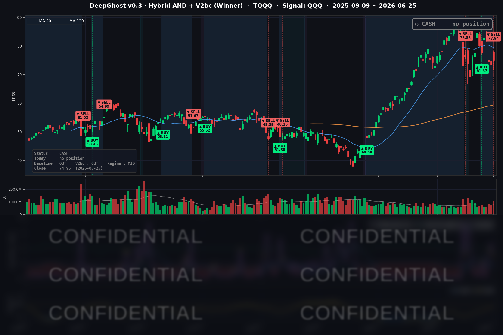

오늘 시초가에 TQQQ를 정리하고 현금화하였습니다, 이번 손익은 -4.6% 입니다.
오늘은 뜨거운 물가 지표와 애플 급락이 시장을 흔들었습니다. 메모리 가격 상승 (칩플레이션)으로 물가가 오를 것이라는 심리입니다.
주식은 심리와 그에 따른 수급 영향이 큽니다. 심리가 안정이 되고 이성적으로 펀더멘털을 보기 시작한다면 매수신호가 다시 나올 것입니다.
📊 오늘의 매매 신호
| 항목 | 내용 |
|---|---|
| 오늘 할 일 | 🔴 TQQQ 전량 매도 — 오늘 미국 장 시초가에 청산 완료 |
| 포지션 상태 | 💵 현금 보유 중 (OUT OF POSITION) |
| 보유 기간 | 2026-06-17 ~ 2026-06-25 (8일) |
| 이번 거래 수익 | -4.6% (실현) |
6월 17일 시초가에 매수했던 TQQQ가 오늘(6/25) 미국 장 시초가에 청산되며 현금으로 전환됐습니다. 전일(6/24) 종가 기준으로 매도 신호가 나왔고, 룰에 따라 다음 거래일 시초가에 체결됩니다. 추세가 살아나지 못한 짧은 거래를 규칙대로 손절한 결과로, 실현 손익은 약 -4.6%입니다.
TQQQ 시그널 — OUT OF POSITION
현재 상태: 현금 보유 중 | 이번 거래 실현 -4.6%

이번 회차의 핵심은 타이밍입니다. 전략은 미래를 예측한 것이 아니라 가격 모멘텀이 식고 있다는 신호를 먼저 감지해 포지션을 정리했습니다. 공교롭게도 청산한 바로 그날 장중에 물가 지표와 애플 급락이 겹쳤습니다. 결과적으로 빅테크가 흔들리기 직전에 위험을 덜어낸 모습이 됐습니다.
손절은 기분 좋은 일은 아니지만, 추세가 받쳐주지 않을 때 규칙대로 빠져나오는 것이야말로 레버리지 상품을 다루는 핵심입니다. 지금은 무리하게 다시 들어갈 자리가 없어, 전략은 현금을 들고 관망하는 자세입니다.
오늘 미국 시장 — 시황 요약
지수 마감
| 지수 | 종가 | 등락률 |
|---|---|---|
| S&P 500 | 7,357.49 | -0.01% |
| 나스닥 종합 | 25,358.60 | -0.46% |
| 다우존스 | 51,920.62 | +0.14% |
| 러셀 2000 | 3,007.86 | +0.71% |
헤드라인 지수만 보면 평온해 보입니다. S&P 500은 사실상 보합, 나스닥도 소폭 약세에 그쳤죠. 하지만 속을 들여다보면 시장은 둘로 쪼개져 있었습니다. 대형 기술주가 흔들린 와중에 소형주(러셀 2000)는 오히려 강세를 보였습니다. 평균만 보면 잔잔해 보이는 '평균의 함정'이 그대로 나타난 하루였습니다.
국채 금리 동향
| 만기 | 수익률 | 변화(직전 유효종가 대비) |
|---|---|---|
| 3개월 | 3.680% | +2.2bp |
| 5년 | 4.163% | -6.2bp |
| 10년 | 4.392% | -5.9bp |
| 30년 | 4.858% | -4.3bp |
장단기 금리차(10년−3개월)는 +71.2bp로 정상적인 우상향 곡선을 유지했습니다. 흥미로운 점은 물가가 뜨거웠는데도 장기 금리는 오히려 내렸다는 것입니다. 단기 금리는 소폭 올라(연준의 '버티기' 기조 반영) 인하 기대 후퇴를 보여줬지만, 5년·10년·30년 장기물은 일제히 하락했습니다. 장기 금리가 내리면 성장주와 소형주에 우호적인데, 이날 QQQ와 소형주가 버틴 배경이기도 합니다.
연준 발언 & 금리 패스
연준(의장 Kevin Warsh)은 직전 회의에서 정책금리를 약 3.6% 수준으로 동결하고 물가 안정 우선 메시지를 강조한 것으로 전해집니다. 이날 발표된 5월 근원 PCE 물가가 4.1%로 2023년 4월 이후 최고치를 찍으면서, 추가 금리 인하 기대는 한층 뒤로 밀렸습니다. 단기 금리 상승이 이 흐름을 뒷받침합니다.
오늘의 핵심 이슈
- 마이크론(MU) 어닝 서프라이즈 — AI 메모리 슈퍼사이클 확인. 분기 매출 약 414억 달러(전년比 +346%), 다음 분기 가이던스 500억 달러로 시장 예상을 크게 웃돌았습니다. 2026년 HBM 물량은 다년 고정가 계약으로 전량 선판매가 끝났습니다. 주가는 하루 만에 +15.7% 급등했습니다.
- 애플(AAPL) 1년 내 최대 급락 — 같은 메모리 부족이 비용으로 돌아오다. 애플이 맥북·아이패드 등의 가격을 사이클 중간에 이례적으로 인상한다고 발표하면서 마진 우려가 불거졌고, 주가는 -6.1% 급락했습니다. AI 데이터센터발 메모리 공급 부족이 부품 비용을 끌어올린 여파입니다. 마이크론을 띄운 바로 그 테마가 애플에는 비용 충격으로 작용한 셈입니다.
- 뜨거운 물가, 그러나 내린 장기 금리. 5월 근원 PCE 4.1%, 1분기 GDP 최종치 +2.1%로 상향, 신규 실업수당 21.5만 건으로 노동시장도 견조했습니다. 물가가 가속됐는데도 장기 금리는 내리고 소형주가 강세를 보인 점이 이날 시장의 특이점이었습니다.
변동성 & 투자심리
- VIX(공포지수): 18.89 (전일 대비 +1.40%) — 경계감은 있지만 패닉 수준은 아닙니다. 애플이 급락했어도 지수가 보합이라, 시장은 이를 시스템 위기가 아닌 종목 단위 이벤트로 소화했습니다.
- 공포·탐욕 지수(CNN): 28 — '공포' 구간. 대형주 변동성과 물가 재가속 우려가 심리에 반영됐습니다.
- 종합 분위기: 중립~경계. 물가 재가속이 상단을 누르지만, 장기 금리 하락과 소형주 강세가 하단을 받쳤습니다.
매크로 & 원자재
- 유가: WTI $71.43 (+1.55%), Brent $75.02 (+1.74%)
- 금: $4,036.90 (+1.17%)
유가와 금이 동반 강세를 보였습니다. 물가 헤지 수요와 위험선호가 뒤섞인 흐름입니다.
주요 종목 동향
| 종목 | 종가 | 등락률 | 비고 |
|---|---|---|---|
| AAPL | 275.15 | -6.12% | 맥·아이패드 가격 인상 발표, 마진 우려, 1년 내 최대 급락 |
| MU | 1,213.56 | +15.74% | 어닝 서프라이즈, 다음 분기 가이던스 500억 달러, HBM 전량 선판매 |
| QCOM | 204.90 | +3.79% | 반도체·메모리 강세 동조 |
| INTC | 132.87 | +0.93% | 반도체 강세 동조 |
| GOOGL | 343.71 | -0.46% | 상대적 선방 |
| TSLA | 375.12 | -0.11% | 사실상 보합 |
| NFLX | 70.90 | -1.31% | 소폭 약세 |
| NVDA | 195.74 | -1.64% | 빅테크 동반 조정 |
| AVGO | 378.91 | -0.83% | 반도체 내 차별화 |
| META | 542.87 | -2.65% | 빅테크 조정 |
| AMZN | 227.01 | -3.10% | 하드웨어·소비 비용 우려 동조 |
| MSFT | 352.83 | -3.46% | 대형 기술주 약세 동조 |
같은 'AI 메모리 부족' 테마인데 공급사(마이크론·퀄컴)는 웃고, 수요사(애플·MSFT·아마존)는 울었습니다. AI 슈퍼사이클의 청구서가 누구에게 가는지를 한눈에 보여준 하루였습니다.
Ghost.AI — Quantitative AI Investment
Model: DeepGhost v0.3 | Transformer-Based Deep Learning
Coverage: 13 tickers | Updated every trading day after US market close
⚠️ 본 자료는 정보 제공 목적으로만 작성되었으며 투자 권유가 아닙니다. 모든 투자의 책임은 투자자 본인에게 있습니다. 과거 성과가 미래 수익을 보장하지 않습니다.
[유의사항]
- 본 서비스는 불특정 다수를 대상으로 발행되는 단방향 정보 제공 서비스이며, 투자자 개인의 재산 상황·투자 목적·위험 선호도를 반영한 개별 투자 조언이 아닙니다.
- 고스트에이아이 주식회사는 고객과 쌍방향 의사소통(개별 상담, 맞춤형 자문 등)을 제공하지 않습니다.
- 본 콘텐츠는 투자 권유 또는 매매 주문의 청약·청약의 권유에 해당하지 않으며, 최종 투자 판단 및 그에 따른 손익의 책임은 전적으로 투자자 본인에게 있습니다.
고스트에이아이 주식회사